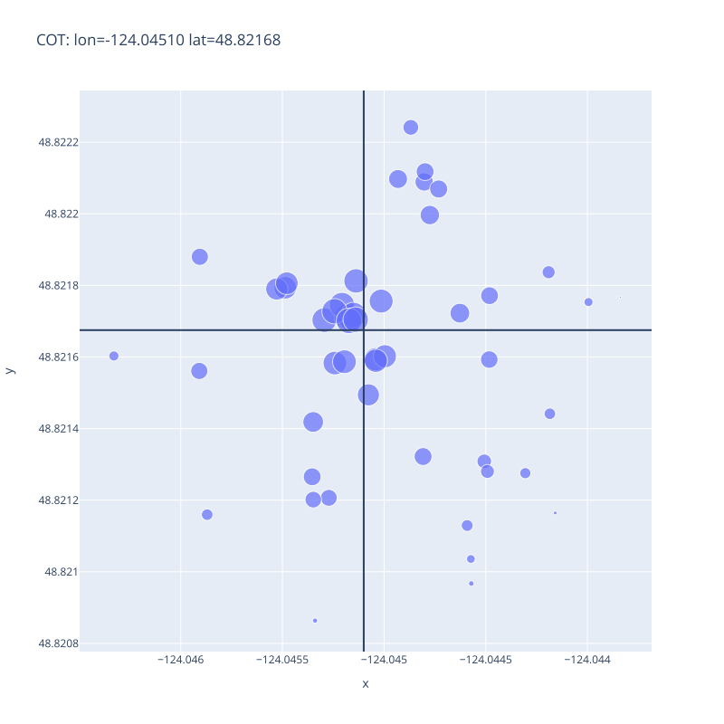

Working with Geocoded Data
Finding the centers of a set of map points.
- FIXME
- Try to narrow down the location of the pollutant spill by building a simple geographical model using cleaned-up data
- Along the way, discuss how to find and select useful open source libraries…
- …what a data manifest is and why we should have one…
- …and how to create a reproducible workflow using [Make][gnu-make]
- FIXME: modify this example to get data from files instead of SQL database
